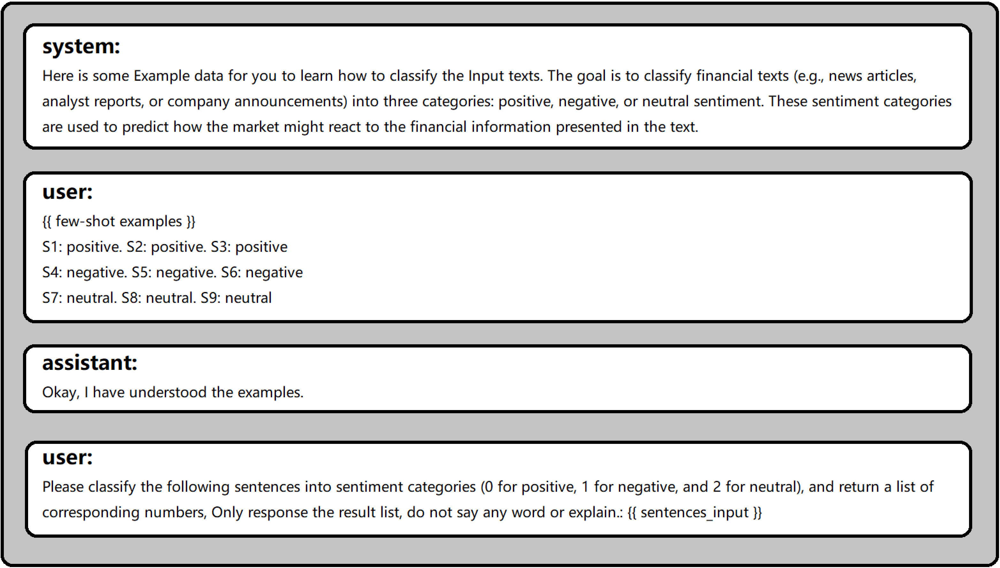

Soci
a
l
M
e
d
i
a
Se
n
ti
m
e
n
t A
na
lysis for
C
ry
p
toc
u
rre
n
cy
Ma
r
k
et
P
re
d
ictio
n
Ikram Ansari, Mukul Vishwas
Ali Raheman
1
, Anton Kolonin
1,2,3[0000-0003-4180-2870]
, Igors Fridkins
2
,
1[0000-0002-9091-6674]1[0000-0002-8824-1954]
SingularityNET Foundation, Amsterdam, Netherlands
1
Autonio Foundation Ltd., Bristol, UK
2
3
Novosibirsk State University, Novosibirsk, Russian Federation
{
ali.raheman,akolonin}@gmail.com
processing models for the s ntiment analysis of soc al media applied to finan-
cial market prediction, using the cryptocurrency domain as a reference. We
ments of Bitcoin. For this purpose, we explore different methods to calculate
prediction task. We find that one of the models outperforms more than 20 other
public ones and makes i possible to fine-tune it fficiently given its inter-
natural language processing methods might be more valuable practically han
non-explainable and non-interpretable ones. In the end, we analyze potential
A
b
str
a
ct. In this paper, we
e
explore the usability of
i
different natural language
study how the different sentiment metrics are correlated with the price move-the
sentiment metrics from a text finding most of them not very accurate for this
pretable nature. Thus we
t
confirm that interpretable
e
artificial intelligence
t
and
causal connections between the different sentiment metrics and the price move-
ments.
K
eywor
d
s: Cryptocurrency, Explainable Artificial Intelligence, Financial Ma
ket, Interpretable Artificial Intelligence, Natural Language Processing, Senti-
r-
ment Analysis
1
I
n
tro
du
ctio
n
We all are well aware of how much social med a is connected to everyone’s life and
the impac it has on it. Recently we have witnessed how tweets/news can change the
dynamic pri ing of cryptocur encies. With this in mind, we ried to determine how
simple words, can a sentiment score be us d for price prediction. The Natural L n-
guage Processing (NLP) domain has developed so fast hat we have better ways to
deal with raw texts than in recent years.
social media in the form of blog posts, online forums, reviews, and feeds (such as
cent study shows an average person produces 1.7 MB of data every second, 102 MB
in a minute and we all send a total of 18.7 Bi lion texts every day. We focused on
sentiment
t
is
c
correlated to the
r
price change
e
and
i
whether
t
it is
t
possible to predict?
a
In
With easily accessible technologies, it is now very easy to put your thoughts out on
Twitter or Reddit). This leads us to an astonishing number of texts every second; a re-
Twitter and Reddit for our text data sources and
l
collected about six months of data for
our experiments. In this paper, we compare different machine learning (ML) models
2
as well as models based on lexicons and “n-grams” and analyze their performance.
person/page to get more ins ght into a particular domain.
Social media provides diverse exposure to business and the various ways to con-
nect to their customers. Consumers can use the product or se vice and can provide
People are creating various
i
communities to spread their thoughts and others follow a
feedback (reviews) of said service/product. Sentiment analysis
r
is widely used to ex-
tract valuable insights from the received feedback, which can help improve or evolve
the service/product for future customers.
Twit er/Reddi are the types of social media where anyone can express their
cryptocurrency markets due o the lar e number of people who are deeply into the
cryptocurrency markets and publish technical analyses and thoughts of the markets.
Therefore, they become ‘reference’ sources of thoughts/analyses which eads to a ma-
thoughts,
t
reviews,
t
memes or
t
daily life
g
events. These tweets and feeds can affect the
jority of people following
i
them. With this information, it is clear to say
l
the
-
feedback/
thoughts from social med a are very important and can help create a better involving
prediction of the price movements.
Sentiment analysis was first used in the 1950s and the field has been continuously
ferent sentiment analysis models found in the public domain and evaluated them with
Reddit news feeds. We have found the superior model based on “n-grams” associated
evolving ever since. In this research, we have tried to evaluate more than twenty dif-
respect to cryptocurrency-specific text corpus based on the latest public Twitter and
and
,
were able to improve its performance
d
significantly due to its “interpretable” na-
ture as such, we could amend and exten vocabularies of entries corresponding to
positive and negative sentiment in custom cryptocurrency-specific jargon.
2
M
et
h
o
d
ology
Th s study has been divided into five pa ts. First, a literature survey was conducted on
all
i
publicly available sentiment models
r
as identified further. Second, the six months
worth of public Twitter and Reddit “tweets” and posts across 77 well-known feeds/
data was processed using each of the identif ed models and their comparative perfor-
mances have been evaluated. Fourth, after completing the third phase, we found the
subreddits in the cryptocurrency community
i
have been collected. Third, the collected
best model for the financial domain was the open-source Aigents model (identified
t
as
“aigents” in Figure 1). Then, we improved the vocabularies of n-grams of the lat er
model and re-evaluated the performance of the models. At this point, we have found
the correlation between improved Aigents model sentiment score and the “ground
Fifth and finally, we have explored possible causal connections between he sentiment
metrics and the price movements studying mutual Pearson correlation between daily
Bitcoin price differ nce (derivative) and each of the basic four sentiment metrics
truth” significantly increased from 0.33 to 0.57 (identified as “aigents+”
t
in Figure 1).
(
sentiment, positive,
e
negative, contradictive
) discussed further, all metrics are aggre-
gated on daily basis.
3Se
n
ti
m
e
n
t A
na
lysis
M
o
d
els
Sentiment Analysis (SA), also known as opinion analysis or emotion AI, can be de-
fined as the process of calculating emotions, opinions, and attitudes scores. This score
can be used for further analysis and usually the sentiment scores are ’Positive’, ’Nega-
3
tive’,
r
and ’Neutral’. Sentiment analysis problems may be further addressed from a few
diffe ent perspectives, as follows.
the customer’s feedback sentiment. It is mainly used to analyze ratings and reviews.
3.1
F
i
n
e-gr
a
i
n
e
d
se
n
ti
m
e
n
t
This is the most simplified sentiment analysis task to understand, consisting mostly of
Typically this type of feedback is in different categories like the star rating
t
system (1-
5), where numbers indicate 1: very positive, 2: positive, 3: neutral, 4: nega ive, and 5:
very negative.
emotion hidden behind the t xts. The popular ones a e anger, sadness, happiness,
3.2
Em
otio
n
d
etectio
n
The
t
name
,
itself describes the
e
function of this category
r
and it helps to determine the
frus ration fear, panic, worry, or anxiety.
or service. To make it easier to understand, let us take an example of a LED televi-
sion. The manuf cturing ompany an ask for feedback on light, sound, picture qual-
3.3As
p
ect
ba
se
d
This sentiment analysis technique focuses more on the aspects of a particular product
ity, or durability
a
and this
c
will help
c
the manufacturer/seller understand the issue with
the product and improve it to make it better and more useful.
By using this method, we can dig in o a customer’s intent. We can understand f the
customer just wants in ormation about he product or wants to purchase it. With the
3.4
I
n
te
n
t
ana
lysis
intent analysis, we can
f
record, track,
t
or
t
form a pattern. This information can be
i
used
for target marketing.
3.5
F
o
u
r
ba
sic
m
etrics
In our current work, we have considered four basic sentiment metrics, each evaluated
by the way sentimen analysis is struc ur d by the model providing the best perfor-
mance in the end, so the outputs of the other models were aligned to that.
Se
n
ti
m
e
n
.
overall or compound sentiment/polarity in range [-1.0,+1.0], so its
and for other models it can be computed as a sum of the
positive
and the
n gative
sen-
timent.
can be only positive; some of the models can provide this metric and for other models
erwise.
can be only negative; some of the models can provide this metric and for other models
independently across
t
different models,
t
as
e
follows. This particular choice was driven
value can be
t
either negative or positive; some of the models can provide
e
this metric
P
ositive
.
canonical positive sentiment assessment in range [0.0,+1.0], so its value
it can be assessed as the
sentiment
if the value of the latter is above zero or zero oth-
Neg
a
tive
.
canonical negative sentiment assessment in range [-1.0,0.0], so its value
it can be assessed as the
sentiment
if the value of the latter is below zero or zero other-
wise.
4
computed as
SQRT(pos ive * ABS(negati e)
That is, instead of addressing the SA problem as a plain classification (’Positive’ vs.
C
o
n
tr
ad
ictive
.
mutual
it
constructiveness
v
of
).
the
positive
and
negative
assessments
’Negative’ vs. ’Neutral’), we have treated it
i
as a
t
multinomial
i
classification problem in
four independent dimensions correspond ng o the indiv dual metrics mentioned
above.
4
M
o
d
el
E
v
a
l
ua
tio
n
E
x
p
eri
m
e
n
ts
We ran the same data through 21 different sentiment models for our experiments, cal-
culated the sentiment score, and compared them. The selected winning models have
been f ne-tuned and re-evaluated, so overall 22 individual models are presented in
Figure
i
1. All of the evaluated models are publicly available following the respective
references.
We have used about 100,000 news items (tweet and Reddit posts) acros 77 public
ber of 2021 for exploration of the connection between the sentiment and the price
movement discussed at the end of thi pape . The data collection process has been
based o official Reddit and Twitter APIs and was per ormed exclusively on public
used 490 tweets/posts from 5 randomly selected Twitter public feeds. The tweets/
posts have been manually classified for bo h posit ve and nega ive sentiment n the
the “ground truth” sentiment assessment as the average of the two assessments for
tradictive
metrics have been computed according to section 3.5. The list of source
quest
21 different models.
Afi
nn
. It was created by Finn Årup Nielsen; it is a lexicon-based app oach and it
score associated with it. The range for Afinn varies between -5 to 5 [1].
V
ad
er. VADER stands or (Valence Aware Dictionary and sEntiment Reasoner).
It was creat d by C.J. Hutto & E.E. Gilbert at the Georgia Ins itute of Technology. It
dia. It has over 9,000 words, and every word was marked by ten independent people
4.1D
a
t
a
Twitter timelines and Reddit subreddits over the
s
six month period of July
s
to Decem-
posts in
n
public feeds. For the purpose
s
of the
r
algorithm
f
quality assessment, we have
range [-1.0,0.0] and [0.0,+1.0] respectively
t
by two
i
independent
t
reviewers and
i
made
positive
and
negative
metrics
.
Respectively, the “ground truth” for
sentiment
and
con-
feeds
.
as well as the reference corpus of manually classified feeds is available upon re-
4.2
M
o
d
els
We tried our experiments evaluating the sentiment from raw textual data on a total of has
a total of 3,382 positive and negative words. Each word has a positive
r
or negative is a
lexicon
e
and rule-based
f
sentiment model specially created
t
for texts in social me-from -4
(extremely negative) to 4 (extremely positive) and after that, the final score is
the average of all 10 scores [2].
T
extBlo
b
. TextBlob is a lexicon and rule-based sentiment model. It has over 2,500
tween -1 (extremely negative) and 1 (extremely positive).
G
oogleN
LP
As the name indicates, GoogleNLP is owned by Google and it has a
words and returns the subjectivity and polarity of the text. The polarity range lies be-
straightforward
.
API to use. Google provides a free account for one month. Addition-
5
ally, the model is a complete black box for the user, the sentiment score ranges from -
1 to 1.
A
W
S. Amazon continuously increases its presence in machine learning and deep
specifically for Natural Language Processing (NLP). It is also an utterly b ack-box
model for the user, and Amazon provides a trial account for one month.
Aige
n
ts. Aigents is an “interpretable” model based o “n-grams,” ava lable as part
comes with ”out-of-the-box” vocabularie for n-grams asso iated w th positive and
negative sentiment. It has over 8,200 negative and over 3,800 positive n-grams and
rences of the reference n-grams in the text along with independent positive an nega-
tive sentiment metrics. One of the specifics of the model is implementation of the
tion it means precedence given for n-grams with higher “n”, so whenever any n-gram
is matched, al matches of any other n-grams being parts of the fo mer n-gram ar dis-
bigram [“bad”,”thing”] and unigram [“bad”] are disregarded and discounted. Simi-
grams [“no’] and [“good”]. In addition to that, the model has an option to provide log-
abling this option it provides better performance
different datasets.
% faster than BERT and keeps 97% of BERT’s anguage understanding. disti bert
was trained on the same da aset s BERT, English Wikipedia and Toronto Book Cor-
pus [4].
se model is BerTweet, a RoBERTa model. The model was trained on SemEval
2017 corpus (around ~40k tweets) [5].
was trained on ~58 Million tweets [6].
ProsusAI/finBERT.
The base model used was BERT and it was created to analyze
tences, Financ al PhraseBank which has 4845 sentences from financial news and
FiQA Sentiment dataset [7].
seq2se2 model for french [8].
learning fields by providing various services. AWS comprehend is one of the
l
services
of
s
distribution,
n
and
c
written
i
in
i
Java which
returns the overall sentiment/polarity of the text based on the frequencies of
d
occur-
“priority on order” principle as discussed in [3]. In the Aigents-specific implementa-
regarded. For
l
instance, if tetragram [”not”,”a”,”bad”,”thing”] is
r
matched, then
e
both
larly, matching bigram [“no”, “good”] disregards and discounts both constituent uni-
arithmic scaling of the counted frequencies and
.
our studies have revealed that by en-
B
ERT
ba
se
d
m
o
d
els. In our experiments, we used 15 BERT-based models trained on
60
Distilbert-base-uncased.
t
It is
a
a distilled version
l
of BERT, it is 40% smaller
l
and
ba
finiteautomata/bertweet-base-sentiment-analysis.
a transformer-based library. The
cardiffnlp/twitter-roberta-base-sentiment.
The base model used was RoBERTa and
financial texts.
i
It was trained using the TRC2-financial
,
dataset, which has 400K sen-
moussaKam/barthez-sentiment-classification.
The base model was BERT, it is a
"T
textattack/bert-base-uncased-imdb.
r
The
l
researchers created a python
i
framework
extAttack" which is used for adve saria training, data augmentation n NLP the
base model is BERT and trained on IMDB dataset [9].
6
ent analysis, emotion analysis, and hate speech detection, trained on TASS 2020
corpus (around ~5k tweets) [14].
ge [10] and it was trained and evaluated n 15 diverse da a ets [11].
sagorsarker/codeswitch-spaeng-sentiment-analysis-lince.
A BERT-based model
ysis. It was trained on LinCE[13] dataset and can be used on mixed languages: Eng-
h, Spanish, Hindi and Nepali.
IMDB dataset.
was bert-base-multilingual-cased and fimetuned on SAIL 2017 dataset [12].
trained on IMDB dataset.
RoBERTa and fine tuned on the Yelp polarity dataset.
IMDB dataset. Model accuracy 0.9426 and Precision: 0.930.
tweets_hate_speech_detection dataset for hate speech detection.
During these experiments, we encountered great deal of challenges.
S
a
rc
a
s
m
. People use sarcasm in their posts or conver ation, it is the way of ex-
pressing a negative sentiment using a backhanded compliment. This situa ion can
m
initeautomata/beto-sentiment-analysis.
Transformer-based library used for senti-
lar
siebert/sentiment-roberta-large-english.
o
This model is
t
a
s
finetune of RoBERTa-
used for language identification, pos tagging, name entity recognition, sentiment anal-
lis
aychang/roberta-base-imdb.
roBERTa was used as a base model and trained on the
rohanrajpal/bert-base-multilingual-codemixed-cased-sentiment.
base model used
abhishek/autonlp-imdb_sentiment_classification-31154.
BERT based model
VictorSanh/roberta-base-finetuned-yelp-polarity.
This model is based on
severo/autonlp-sentiment_detection-1781580.
BERT based model trained on
on
mrm8488/distilroberta-finetuned-tweets-hate-speech.
distilroberta-base fine-tuned
5
R
o
adb
loc
k
s
make it difficult for the sentiment model to
a
understand the
s
true context of the
t
texts. If
most of the texts contain sarcasm, it results in a higher number of positive sentiments
en though in reality it was negative.
idioms used in the texts.
Neg
a
tio
n
s. High use of negation leads to misclass fication. For example “not bad”
is posit ve but for most of the lexicon-based models it will be negative because we are
ev
I
d
io
m
s. Sentiment
,
analysis methods are still not mature enough to understand the
using a
i
negative word with negation. This word order
i
makes it positive, but most lexi-
con-based models consider it negative.
No
n
-text
da
t
a
. Twitter and Reddit are not limited to texts only. Users can upload
audio, images, and videos. If the images contain a strong indication of price change,
the sentiment model will miss that.
6
E
x
p
eri
m
e
n
t
a
l
R
es
u
lts
The evaluation of the 21 models has been performed relying on the “ground truth”
reference data discussed in section 4.1 with results presented in Figure 1.
The winning “aigents” in Figur 1) model as also bee use for fine-tuning, so
“out-of-the-box”
(
vocabularies were
e
updated to
h
get in sync
n
with
d
cryptocurrency do-
7
main terminology and jargon. This has become possible due to the ”interpretable” na-
ment analysis, referencing 490 tweets were spotted for the misalignments between
counterpart with he discrepancy exceeding
0.5
for any of the two metrics. Further-
more, the content of the corresponding texts were considered as a clue to search for
subjec domain area termin logy, jargon and figures of speec to add respective n-
were used to re-evaluate the model (“aigents+” in Figure 1) so we have received 22
In addition to that, we have tried to build “ensemble” models, using all 22 models
semble(all)” and “ nsemble(all)” “ensemble( op 3)” in Figure 1, respectively.
The performance of the models has been evaluated using the Pearson correlation
values “predicted” by the mode and the “ground truth” values. The ave age correla-
tion over the four metrics was used as a score across all models as presented in Figure
1. As we can see in Figure 1, the top performance according to the Pearson co relation
model (0.33) lines up with the finBERT model pre-trained on the financial domain
ture of the Aigents model. For the purpose of the fine-tuning, the results of the senti-
“predicted”
s
values
t
of
positive
and
negative
metrics and their respective “ground truth”
grams
t
to either positive or
o
negative vocabulary. Finally, the
h
updated vocabularies
individual models in the end. The latter fine-tined model is available as open source.
and only the top 3
e
models selected based on
t
their superior performance, seen as “en-
coefficient across 490 reference
l
tweets/posts for each of the four metrics
r
between the
corresponds to fine-tuned Aigents model (0.57). Next, the “out-of-the-box”
r
Aigents
(0.32). The other
l
remaining models either barely approach the threshold of 0.3 or stay
behind around a evel of 0.0 showing no correspondence to the “ground truth” assess-
ments.
F
ig. 1. The bar chart above shows the average Pearson correlation between sentiment metrics
of-the-box” Aigents model "aigents" has a correlation of ~0.33, and after fine-tuning,
models, and ’"ensemble(top 3)" corresponds to the average of the best three models (aigents+,
Moreover, the whole volume of data of 100,000 twee s and Reddit posts across 77
publ c Twitter timelines and R ddit sub eddits over the six month period has been
“predicted” by respective models and “ground truth” provided by humans. We can see the “out-
“aigents+” has a correlation of ~0.57. "ensemble(all)" corresponds to average metrics across all
aigents and finBERT).
used
i
to search for a connection
e
between
r
the sentiment
t
metrics and the price moves,
8
lation computed between the daily Bitcoin price difference (derivative) and respective metrics
ove six months from July to December 2021, computed using the “aigents+” model with rela-
to +7) along the timeline, x-axis showing the days lag and y-axis corresponding Pearson corre-
d) Contraindicative (SQRT(positive * ABS(negative )).
In order to explore this possibility urther, we have run the study following the con-
F
ig. 2. Temporal correlation analysis for different sentiment metrics with mutual Pearson corre-
tive
r
lags (shifts) of the price difference time series a certain number of days back or forward (-7
lation: a) Overall sentiment (positive + negative); b)
)
Positive sentiment; c) Negative sentiment;
cept of
i
causal analysis in
s
time series
f
[15] across all
r
four metrics evaluated. For each
of the ndividual 77 new channels, we have explo ed 308 individual time series of
Figure 2. We can see that the plots corresponding to overall sentiment and positive
the plot for the contradictive metric is showing the peak t -2 and -1 days shift while
for the neg tive metric we see the high negative correlation a -1 day. A though the
correlation values are not high (about 0.15), the amount of underlying data volume
following the concepts of causal analysis on time series discussed in [15], as shown in
metrics are
a
presenting the peaks in the correlation value
a
at -2
t
days shift.
l
Moreover,
may suggest potential causal connections between respective sentiment metrics and
the price change with two or one-day lag.

9
sentiment metrics as potential causal sources of the single price diffe ence time. We
computing mutual Pearson correlation between each of the 308 potential causes and
ery time lag l, news channel c, and metric m. Also, the channels c were weighted as
W(c) acc rding to the percentage of days with news p esent on such days. Then, for
every day d have been built from the original raw metrics X(c,m,d). The compound
metric building process was mplemented starting from channels with the highest
W(c) and P(l,c m) adding ingredients up o Y(l,d) incrementally, as long as the corre-
up Y(l,d) series for given time lag l keeps increasing. In he end, we have evaluated
the terminal (maximum) correlation values for eve y lag, as shown in Figure 3.
Given a much clearer maximum at -1 day lag with correlation value as high as 0.55,
sion and weighting of the news metrics and channels enables finding more causally
connected time se ies, which builds up compound sentiment indicators that are poten-
only suggest that the day before the cryptocurrency (Bitcoin) price change might be
have run the temporal causation study evaluating different time lags in
r
days [-10,+10]
the price difference and retaining the weights of the computed value P(l,c,m) for ev-
every lag
o
l, the compound metric time series Y(l,d) =
r
ΣX(c,m,d)*P(l,c,m)*W(c) for
lation between
,
the target price
i
difference
t
function
r
and the
t
current content of summed
compared with values corresponding to other lags, we can assume that selective inclu-
tially valuable for
r
further feature engineering for the price prediction purposes. It can the
most impactful from the perspective of the manipulative effect of social media on
the market behavior.
F
ig. 3. Temporal correlation analysis for different sentiment metrics with mutual Pearson corre-
lation computed between the daily Bitcoin price difference (derivative) and compound senti-
ment indicator built up upon 77 news channels and 4 sentiment metrics individually for respec-tive
time lags (in days, -10 to +10) over six months from July to December 2021, x-axis show-
ing the days lag and y-axis corresponding Pearson correlation.
7
C
o
n
cl
u
sio
n
and
Fu
t
u
re
W
or
k
In this paper, we have found the most reliable model for social media sentiment anal-
ysis in the cryptocurrency domain. We have shown how an “interpretable” sentiment
analysis model could be significantly improved manually and wi hou the huge osts
purpose. In our further work, we are exploring how o automate this process of using
the price movements being an implicit tagging of the sentiment-rich text data and
learn ng the indicative n grams from the temporally aligned marke and news media
for training the domain-specific corpus and creating
t
and tagging
t
this
t
corpus for
c
said
data,
i
with the option for
-
manual review on the discovered patterns
t
within the “inter-
10
model further.
tween social media sentiment and the price movements as an increase of expression of
We have also shown that the automated process of building compound sentiment indi-
this area will be dedicated to exploring the predictive power of the connection to im-
pretable” mode. We are looking forward to improving the performance of the best
Additionally, we have preliminary explored the potential causal connection be-
particular sentiment metrics two or one days before corresponding changes in price.
cators can be employed to increase the power of such connections. Our future work in
prove the reliability of the price prediction and business applications for decentralized
finance relying on such predictions.
R
efere
n
ces
1. Nielsen, F.: Evaluation of a word list for sentiment analysis in microblogs. arXiv 2011. arXiv
preprint arXiv:1103.2903 (2011).
cial med a text. In Proceedings of the International AAAI Confe ence on Web and Social
Media (Vol. 8, No. 1) (2014).
logs. Proceedings of All-Russi conferen e Knowledge Ontology Theories (KONT-2013),
Novosibirsk, Russia (2013).
smaller, faster, cheaper and lighter. arXiv preprint arXiv:1910.01108 (2019).
sis and SocialNLP tasks. arXiv preprint arXiv:2106.09462 (2021).
benchm rk and comparative evaluation for tweet classif cat on. arXiv preprint
arXiv:2010.12421 (2020).
print arXiv:1908.10063 (2019).
quence-to-Sequence Model. EMNLP (2021).
Mor is, J. X., L fland, E , Yoo, J. Y., Grigsby, J , Jin, D., Q , Y.: Texta tack A framework
arXiv:2005.05909 (2020).
optimized bert pretraining approach. arXiv preprint arXiv:1907.11692 (2019).
sentiment analysis accuracy. Available at SSRN 3489963 (2020).
switching evaluation. ArXiv preprint arXiv:2005.04322 (2020).
Khanuja, S., Dandapat, S., Srini vasan, A., Sitaram, S., Choudhury, M.: GLUECoS: An
14. Canete, J., Chaperon, G., Fuentes, R., Ho, J. H , Kang, H., Pérez, J.: Spanishpr
trained bert model and evaluation data. Workshop paper at PML4DC at ICLR (2020).
feature selection in time series with latent common causes. arXiv preprint
2. Hutto, C.,
i
Gilbert, E.: Vader: A parsimonious rule-based model for
r
sentiment analysis of so-
3. Kolonin, A.: High-performance
a
automatic
c
categorization and attribution of inventory cata-4.
Sanh, V., Debut, L., Chaumond, J., Wolf, T.: DistilBERT, a distilled version of BERT: 5.
Pérez, J. M., Giudici, J. C., Luque, F.: pysentimiento: A Python Toolkit for Sentiment Analy-6.
Barbieri,
a
F., Camacho-Collados, J., Neves, L., & Espinosa-Anke,
i
L.:
i
Tweeteval: Unified 7.
Araci, D.: Finbert: Financial sentiment analysis with pre-trained language models. arXiv pre-8.
Eddine, M.K., Tixier, A.J., Vazirgiannis, M.: BARThez: a Skilled Pretrained French Se-
9.
for
r
adversarial
i
attacks,
.
data augmentation, and
.
adversarial
i
training in
t
nlp.
:
arXiv preprint 10.
Liu, Y., Ott, M., Goyal, N., Du, J., Joshi, M., Chen, D., Stoyanov, V.: Roberta: A robustly 11.
Heitmann, M., Siebert, C., Hartmann, J., Schamp, C.: More than a feeling: Benchmarks for 12.
Aguilar, G., Kar, S., Solorio, T.: LinCE: A centralized benchmark for linguistic code-
13.
evaluation benchmark for code-switched NLP.
.
arXiv preprint arXiv:2004.12376 (2020).
e-
15.
Mastakouri, A., Schölkopf, B., Janzing D.: Necessary and sufficient conditions for causal
arXiv:2005.08543 (2020).